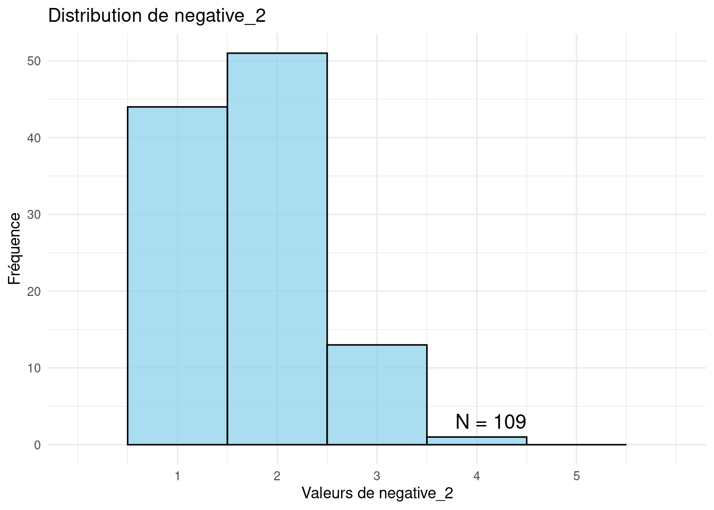

4 Approche psychométrique
Nous proposons d’envisager le contre-transfert selon différents niveaux. En effet, il y a plusieurs moyens de qualifier le contre-transfert en fonction du degré de précision que l’on souhaite y donner. Ainsi avons-nous procédé à plusieurs analyses factorielles avec variation promax avec 1, 2, 3, etc. facteurs. Chaque facteur ajouté révèle un ressenti plus précis par rapport au niveau précédent. Une analyse à un seul facteur semble surtout renvoyer aux ressentis négatifs. Une analyse à deux facteurs fait émerger les ressentis positifs.
4.1 Niveau II
4.1.1 Contre-transferts positifs en négatifs
Le Table 4.1 reprend le calcul des deux facteurs renvoyant aux transferts négatifs et positifs.
La Figure 4.1 représente la distribution de la variable negative_2.
Warning: Removed 2 rows containing missing values or values outside the scale range
(`geom_bar()`).

La Figure 4.2 représente la distribution de la variable positive_2.
Warning: Removed 2 rows containing missing values or values outside the scale range
(`geom_bar()`).| Transfert | Calcul |
|---|---|
| Négatif | (item8 + item12 + item30 + item2 + item15 + item22 +item39 + item46 + item52 + item5 + item68 + item27 + item36 + item13 + item59 + item58 + item75 +item78 +item33 +item45 +item51 +item6 +item34 +item35 +item44 +item57 +item48 +item55 +item26 +item29 +item16 +item37 +item63 +item62 +item10 +item11 +item25 +item77 +item70 +item31 +item60 +item9 +item24 +item38 +item43 +item73 +item18 +item54 +item53R +item3R +item1R) / 51 |
| Positif | (item74 + item42 + item64 + item65 + item47 + item21 + item66 + item69 + item19 + item76 + item53 + item40 + item67 + item71 + item7 + item4 + item79 + item23 +item3 + item28 + item56 + item49 + item72 + item31 + item14 + item29 + item73 + item26) / 28 |
`geom_smooth()` using method = 'loess' and formula = 'y ~ x'`geom_smooth()` using method = 'loess' and formula = 'y ~ x'
`geom_smooth()` using method = 'loess' and formula = 'y ~ x'`geom_smooth()` using method = 'loess' and formula = 'y ~ x'Ce graphique représente le transfert positif (en bleu) ainsi que le transfert négatif (en rouge) ressenti par le clinicien pendant les entretiens. Il nous indique plusieurs tendances :
- Pour les patients traités en ambulatoire, la qualité du transfert augmente entre l’adolescence et l’âge approximatif de 24 ans avant de diminuer progressivement, surtout après cinquante ans. Le transfert négatif (en rouge) est particulièrement rare pour les patients proches de 28 ans. Il augmente ensuite légèrement de manière régulière et continue ;
- Pour les détenus, le transfert positif est plus rare que pour les patients ambulatoires alors que le transfert négatif est plus fréquent ;
- Notons un phénomène particulier vers l’âge de 42 ans des détenus, âge auquel le transfert négatif est plus fréquent que le transfert positif. Il ne redescend qu’après l’âge de 55 ans tout en restant plus fréquent que le transfert positif.
4.1.2 Courbes d’informations des échelles de transfert positif
Warning in EM.group(pars = pars, constrain = constrain, Ls = Ls, PrepList =
PrepList, : EM cycles terminated after 500 iterations.knitr::kable(
head(itemspositifs.gpcm, 25), caption = 'Paramètres de chaque item du transfert positif',
booktabs = TRUE
)| a | b1 | b2 | b3 | b4 | b5 | a1 | ak0 | ak1 | ak2 | ak3 | ak4 | ak5 | d0 | d1 | d2 | d3 | d4 | d5 | |
|---|---|---|---|---|---|---|---|---|---|---|---|---|---|---|---|---|---|---|---|
| item74 | 1.4141744 | -0.1457123 | 0.0686010 | 1.2460416 | 2.0053361 | NA | NA | NA | NA | NA | NA | NA | NA | NA | NA | NA | NA | NA | NA |
| item42 | 1.0956545 | -0.5430509 | -0.2053341 | 0.9183841 | 2.3996626 | NA | NA | NA | NA | NA | NA | NA | NA | NA | NA | NA | NA | NA | NA |
| item64 | 1.0413471 | 0.4654224 | -0.5803534 | 1.6028904 | 2.0767742 | NA | NA | NA | NA | NA | NA | NA | NA | NA | NA | NA | NA | NA | NA |
| item65 | 1.8817464 | -1.2459952 | -0.4567403 | 1.4693054 | 1.6565207 | NA | NA | NA | NA | NA | NA | NA | NA | NA | NA | NA | NA | NA | NA |
| item47 | 1.0778215 | 0.0545528 | -0.4783582 | 1.3258830 | 2.7783876 | NA | NA | NA | NA | NA | NA | NA | NA | NA | NA | NA | NA | NA | NA |
| item21 | 0.6306214 | 0.7006287 | 0.4036936 | 2.5365992 | 4.4082098 | NA | NA | NA | NA | NA | NA | NA | NA | NA | NA | NA | NA | NA | NA |
| item66 | 0.3024565 | 2.0102424 | 1.6415510 | 3.1296466 | 5.2810396 | NA | NA | NA | NA | NA | NA | NA | NA | NA | NA | NA | NA | NA | NA |
| item69 | 0.3946810 | 3.4126311 | 1.9041809 | 5.0373956 | NA | NA | NA | NA | NA | NA | NA | NA | NA | NA | NA | NA | NA | NA | NA |
| item19 | 1.1247732 | -0.1078290 | -0.1088821 | 2.5370589 | 2.9745066 | NA | NA | NA | NA | NA | NA | NA | NA | NA | NA | NA | NA | NA | NA |
| item76 | 1.7223430 | -3.0569150 | 1.5209571 | 1.8136900 | 1.7925543 | NA | NA | NA | NA | NA | NA | NA | NA | NA | NA | NA | NA | NA | NA |
| item53 | 1.6812618 | -1.3726046 | -0.3169489 | 0.8939025 | 2.4775265 | NA | NA | NA | NA | NA | NA | NA | NA | NA | NA | NA | NA | NA | NA |
| item40 | 1.8387781 | -2.2534538 | -0.9132919 | 0.5455855 | 1.6008261 | NA | NA | NA | NA | NA | NA | NA | NA | NA | NA | NA | NA | NA | NA |
| item67 | 0.6322530 | 2.3166890 | 1.3197656 | 1.7082366 | 2.9763602 | NA | NA | NA | NA | NA | NA | NA | NA | NA | NA | NA | NA | NA | NA |
| item71 | 1.0007631 | -5.0841315 | 2.2878765 | 1.4894367 | 2.0517821 | NA | NA | NA | NA | NA | NA | NA | NA | NA | NA | NA | NA | NA | NA |
| item7 | 1.8292610 | -3.3568671 | 0.7995449 | 1.0040855 | 1.3276982 | 2.122685 | NA | NA | NA | NA | NA | NA | NA | NA | NA | NA | NA | NA | NA |
| item4 | 1.0690907 | -2.0766812 | -0.7387283 | -0.2865883 | 1.1490188 | NA | NA | NA | NA | NA | NA | NA | NA | NA | NA | NA | NA | NA | NA |
| item79 | 0.2674034 | -17.1395835 | 10.3144244 | 2.9088089 | -1.3557959 | 6.794823 | NA | NA | NA | NA | NA | NA | NA | NA | NA | NA | NA | NA | NA |
| item23 | 1.2645880 | -0.3503950 | 0.4327018 | 3.3093823 | NA | NA | NA | NA | NA | NA | NA | NA | NA | NA | NA | NA | NA | NA | NA |
| item3 | 1.0827688 | -1.5673792 | -0.9863971 | 0.2458816 | 0.9624711 | NA | NA | NA | NA | NA | NA | NA | NA | NA | NA | NA | NA | NA | NA |
| item28 | 0.2347682 | 2.6709453 | 4.5197002 | 11.0133153 | 0.6330743 | NA | NA | NA | NA | NA | NA | NA | NA | NA | NA | NA | NA | NA | NA |
| item56 | 0.7300321 | -6.6001092 | 2.6136167 | 2.5862904 | 3.1297378 | NA | NA | NA | NA | NA | NA | NA | NA | NA | NA | NA | NA | NA | NA |
| item49 | 0.2325824 | 7.6812500 | 2.6575083 | 4.6817219 | 5.3890108 | NA | NA | NA | NA | NA | NA | NA | NA | NA | NA | NA | NA | NA | NA |
| item72 | 0.1108196 | -41.3422121 | 20.5499413 | 20.9351754 | NA | NA | NA | NA | NA | NA | NA | NA | NA | NA | NA | NA | NA | NA | NA |
| item31 | -0.0395229 | 7.8185389 | 2.1385742 | -42.1680078 | -3.9802911 | NA | NA | NA | NA | NA | NA | NA | NA | NA | NA | NA | NA | NA | NA |
| item14 | 0.3186832 | 4.7407594 | 1.4457883 | 1.5446769 | 7.3231974 | NA | NA | NA | NA | NA | NA | NA | NA | NA | NA | NA | NA | NA | NA |


Les Figures @ref(fig:positifirtinfo-fig) et @ref(fig:positifirterreur-fig) permettent de se rendre compte que la variable de transfert positif offre une bonne évaluation des ressentis positifs entre les Théta -2 et +3, ce qui est assez satisfaisant. Par contre en-deçà et au-delà, elle semble moins fiable et précise.
4.2 Niveau VIII
4.2.1 Statistiques descriptives pour chaque style de contre-transfert
| Moyenne | Ecart_Type | Minimum | Maximum | |
|---|---|---|---|---|
| negatif_8 | 1.71 | 0.63 | 0.76 | 3.91 |
| positif_8 | 2.18 | 0.58 | 1.13 | 3.57 |
| colere_8 | 1.62 | 0.52 | 1.00 | 3.35 |
| pessimisme_8 | 2.02 | 0.70 | 1.00 | 3.79 |
| pertelimites_8 | 1.43 | 0.42 | 0.50 | 2.62 |
| sexualise_8 | 1.24 | 0.41 | 0.00 | 2.62 |
| evitement_8 | 1.44 | 0.67 | 0.80 | 4.00 |
| mefiance_8 | 2.12 | 0.92 | 1.00 | 4.50 |
4.2.2 Négatif
4.2.3 Positif
4.2.4 Colère
Colère (17 items) révèle par les items qu’il comporte que la relation thérapeutique n’est pas bonne. Le thérapeute croit peu les dires du patient. Il peut se sentir irrité et en colère envers ce dernier et un sentiment de devoir se contrôler peut survenir.
Régent (2018, 32) évoque les passages à l’acte contre-transférentiels avec les patients limites et narcissiques :
De façon générale, la littérature clinique rapporte que le contre-transfert des thérapeutes qui travaillent avec ces patients est négatif en raison de la charge d’agressivité que ces patients projettent sur la personne du thérapeute. Face à cette agressivité, les réactions contre-transférentielles des thérapeutes peuvent alors être teintées d’agressivité, tournées vers les patients ou les thérapeutes eux-mêmes, ce qui est nuisible au processus thérapeutique
In this way the intensity of the ‘negative countertransference’ (the anger with the patient) usually increases because of the failure of the countertransference defense (the therapeutic action) and the analyst’s subsequent increase of anxiety over a catastrophe in the countertransference experience (the destruction of the object). (Racker 1957, 324)
The countertransference reactions of aggression (or of its equivalent) occur in response to transference situations in which the patient frustrates certain desires of the analyst. (Racker 1957, 349)
Le Table 4.3 reprend le calcul du facteur renvoyant aux ressentis de colère.
| Transfert | Calcul |
|---|---|
| Colère | (item27 + item48 + item15 + item2 + item39 + item8 + item55 + item29 + item44 + item57 + item37 + item41 + item43 + item45 + item12 + item25 + item32 ) / 17 |
Warning: Removed 2 rows containing missing values or values outside the scale range
(`geom_bar()`).Warning: Using `size` aesthetic for lines was deprecated in ggplot2 3.4.0.
ℹ Please use `linewidth` instead.Warning: Removed 2 rows containing missing values or values outside the scale range
(`geom_path()`).
La Figure 4.3 représente les fréquences de ressentis de colère sur l’échantillon total.
4.2.4.1 Effet de l’âge des patients sur le ressenti de colère
`geom_smooth()` using method = 'loess' and formula = 'y ~ x'La Figure @ref(fig:agecolere-fig) représente l’évolution du vécu d’impuissance du clinicien en fonction de l’âge du patient. Il semble que ce vécu tende à augmenter à partir de l’âge de quarante ans.
4.2.4.2 Effet du genre des patients sur le ressenti de colère
La Figure @ref(fig:genrecolere-fig) représente les différences éventuelles de vécu d’impuissance des cliniciens en fonction du genre du patient.
Welch Two Sample t-test
data: colere_8 by genre2
t = 0.045145, df = 42.402, p-value = 0.9642
alternative hypothesis: true difference in means between group Femme and group Homme is not equal to 0
95 percent confidence interval:
-0.2368022 0.2476423
sample estimates:
mean in group Femme mean in group Homme
1.620915 1.615495 4.2.4.3 Effet du groupe de patients sur le ressenti de colère
La Figure @ref(fig:groupecolere-fig) représente les différences éventuelles de vécu de colère des cliniciens en fonction du groupe du patient.
t.test(colere_8~groupe2)
Welch Two Sample t-test
data: colere_8 by groupe2
t = 0.76771, df = 104.81, p-value = 0.4444
alternative hypothesis: true difference in means between group Détenus and group Patients is not equal to 0
95 percent confidence interval:
-0.1203521 0.2724245
sample estimates:
mean in group Détenus mean in group Patients
1.648926 1.572890 4.2.4.4 Courbe d’information de l’échelle de colère
4.2.4.5 Représentation mythologique de la colère
La divinité grecque de la colère est Lyssa (Λύσα). Elle est l’incarnation de la rage, de la frénésie et de la folie furieuse. Elle était une déesse secondaire, personnification d’une maladie zoonotique pouvant être transmise après une morsure d’animal, souvent d’un chien. Postérieurement appelée rage, la maladie lyssa se manifestait par une perte aiguë de stabilité mentale, une frénésie agressive et de la folie, ainsi qu’une peur de l’eau chez le patient, qui était perçu comme étant possédé par un démon en tant que punition divine (Tsoucalas 2024).
La Figure 4.4 représente un chasseur déchiré par des chiens. À sa gauche se tient Lyssa, poussant les chiens dans un état de frénésie rabique. Elle est représentée comme une chasseresse thrace portant un bonnet en tête de renard ou de chien. Zeus se tient derrière elle, observant la scène passivement. Artémis se tient à droite, tenant une torche dans une main et un arc dans l’autre. La mythologie grecque attribue dès lors le vécu d’intense colère à une maladie envoyée par Lyssa pour les punir.
4.2.4.6 Analyse des ressentis de colères
La colère du thérapeute peut être interprétée comme une réponse à la pression émotionnelle exercée par le patient, que ce dernier n’est pas capable de contenir ou de gérer lui-même. Par exemple, un patient qui lutte avec des sentiments de rage refoulée peut inconsciemment pousser le thérapeute à éprouver cette colère à sa place, créant ainsi une tension dans la relation thérapeutique (Heimann 2018). Cette colère, si elle n’est pas reconnue et analysée par le thérapeute, peut interférer avec le traitement, en affectant l’attitude du thérapeute et en compromettant l’alliance thérapeutique. Cependant, la colère du thérapeute n’est pas toujours dysfonctionnelle. Bion (1962) suggère que les émotions éprouvées par le thérapeute, y compris la colère, peuvent servir de matériau pour comprendre le monde psychique du patient. Si la colère est reconnue, contenue et interprétée de manière appropriée, elle peut devenir un outil thérapeutique puissant. Par exemple, la colère ressentie par le thérapeute peut signaler la présence d’une résistance ou d’un contenu psychique important chez le patient, que ce dernier est en train d’éviter ou de nier (Gabbard 2001).
4.2.4.7 Effet de l’âge sur les types de contre-transfert
`geom_smooth()` using method = 'loess' and formula = 'y ~ x'
`geom_smooth()` using method = 'loess' and formula = 'y ~ x'
`geom_smooth()` using method = 'loess' and formula = 'y ~ x'
4.2.5 Pessimisme
4.2.6 Perte des limites
4.2.7 Sexualisé
4.2.8 Evitement
This withdrawal has diverse origins and natures; but it has specific characteristics, for not every kind of withdrawal by the patient produces boredom in the analyst. One of these characteristics seems to be that the patient withdraws without going away, he takes his emotional departure from the analyst while yet remaining with him; there is as a rule no danger of the patient’s taking flight. This partial withdrawal or abandonment expresses itself superficially in intellectualization (emotional blocking), in increased control, sometimes in monotony in the way of speaking, or in similar devices. The analyst has at these times the sensation of being excluded and of being impotent to guide the course of the sessions. It seems that the analysand tries in this way to avoid a latent and dreaded dependence upon the analyst. (Racker 1957, 352‑53)
4.2.9 Méfiance
4.3 Fiabilité inter-juges
Warning in cor.test.default(positif_8, positif_8psychiatre, method =
"spearman", : Impossible de calculer la p-value exacte avec des ex-aequosWarning in cor.test.default(negatif_8, negatif_8psychiatre, method =
"spearman", : Impossible de calculer la p-value exacte avec des ex-aequosWarning in cor.test.default(colere_8, colere_8psychiatre, method = "spearman",
: Impossible de calculer la p-value exacte avec des ex-aequosWarning in cor.test.default(pessimisme_8, pessimisme_8psychiatre, method =
"spearman", : Impossible de calculer la p-value exacte avec des ex-aequosWarning in cor.test.default(pertelimites_8, pertelimites_8psychiatre, method =
"spearman", : Impossible de calculer la p-value exacte avec des ex-aequosWarning in cor.test.default(sexualise_8, sexualise_8psychiatre, method =
"spearman", : Impossible de calculer la p-value exacte avec des ex-aequosWarning in cor.test.default(evitement_8, evitement_8psychiatre, method =
"spearman", : Impossible de calculer la p-value exacte avec des ex-aequosWarning in cor.test.default(mefiance_8, mefiance_8psychiatre, method =
"spearman", : Impossible de calculer la p-value exacte avec des ex-aequosLa cotation du TRQ pour un(e) même patient(e) par deux professionnels différents mène-t-elle à des résultats similaires ? Il est raisonnable de penser qu’elle ne sera pas complètement identique dès lors que chaque dyade professionnel-patient est différente. Mais sera-telle complètement différente ? Pour tenter de répondre à cette question, nous avons demandé à des psychiatres de coter le TRQ pour les patients que les psychologues avaient rencontrés. Notons que les psychiatres n’ont pas rencontrés tous les patients évalués par les psychologues. En effet, le nombre de patients cotés par les psychiatres est égal à 8. Nous avons dès lors un effectif plus réduit pour cette partie de l’étude.
| Contretransfert | Psychologues | Psychiatres | r | p |
|---|---|---|---|---|
| Positif | 2.18 | 2.44 | -0.04 | 0.93 |
| Négatif | 1.71 | 2.41 | 0.60 | 0.12 |
| Colère | 1.62 | 2.16 | 0.66 | 0.08 |
| Pessimisme | 2.02 | 2.59 | 0.18 | 0.67 |
| Perte des limites | 1.43 | 2.03 | 0.54 | 0.16 |
| Sexualisé | 1.24 | 1.59 | 0.51 | 0.20 |
Le Table 4.4 reprend les moyennes obtenues pour chaque type de contre-transfert cotés par les psychologue d’une part et les psychiatres d’autre part. Il indique également la corrélation (Rho de spearman) entre les deux scores et le degré de significativité.